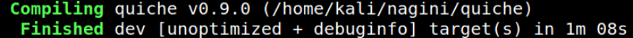

3.1.2 Installing quiche
“Quiche” requires Rust 1.50 or later to build. The latest stable Rust release can be installed using rustup.
Once the Rust build environment is setup, the quiche source code can be fetched using git:
1. Install “quiche”.
GitHub: https://github.com/cloudflare/quiche
$git clone --recursive https://github.com/cloudflare/quiche
2. Built using “cargo”.
$cargo build --examples
Output:
